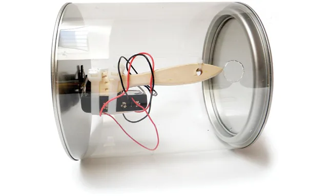
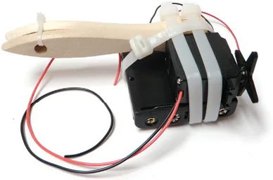
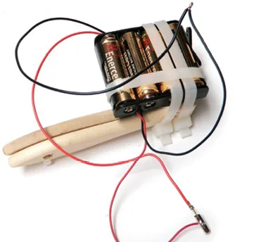
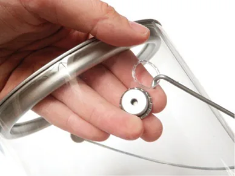
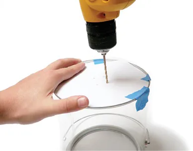
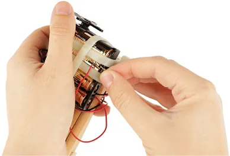
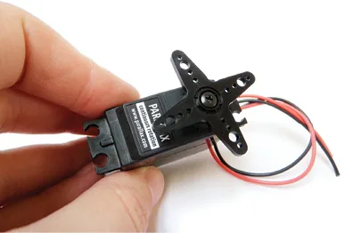
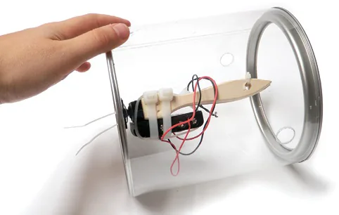
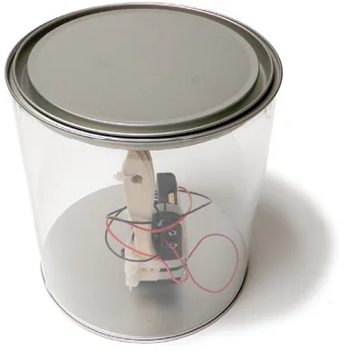

Barreller Bot has seemingly eternal forward propulsion in a given direction. Put simply, it has a motor that acts as an off-centered weight inside a can. When gravity pulls the weight (that is, the motor) down, the can rolls forward. A normal can would likely stop rolling at that point, but this can has a tilt switch that turns the motor on when it drops, causing the motor to rotate back upward (and turn off again), which restarts the process. If you can imagine this happening really quickly and for a sustained amount of time, you’ll understand what this bot does. The Barreller has the appearance of rolling forward on its own and even doing seemingly impossible things like rolling up inclines. This bot is great fun. If you don’t believe me, build one for yourself. It’s quick and easy to do.

Tools and Supplies
- Continuous-rotation servo motor with the controller removed
- Paint can (or similar)
- Two 1-inch paintbrushes
- A 4 × AA battery holder
- Four AA batteries
- Tilt switch (Mouser #107-2002-EV)
- Assorted zip ties
- Drilling template (see Appendix B)
Barreller Overview
The Barreller is built inside a paint can (I used a clear novelty can). Before you do anything, make sure you have modified the continuous servo motor for direct drive (Chapter 4) or are using one of the geared motor alternatives, as outlined in Appendix A. Once that is complete, the next step is building the inner “weight” mechanism, which is essentially a circuit consisting of a motor, battery pack, and tilt switch. You’ll insert this mechanism into the can and attach it to the center.
Constructing Barreller
Step 1. Take apart both paintbrushes such that you are left with the two wooden handles.
Step 2. Put batteries into the battery holder and lay it down on top of a zip tie with the batteries facing down. Place the motor on top of the battery holder so that the servo horn sticks off perpendicularly in one direction and the wooden handles are sticking off in the opposite direction. Zip-tie everything firmly together until it is one singular unit and won’t pull apart.

Step 3. Twist together the black wire from the motor with the black wire from the battery holder and solder the connection. Solder the red wire from the battery holder to the little spike that sticks out of the tilt switch. Solder the red wire from the motor to the conductive metallic shell of the tilt switch. When the tilt switch is activated, electricity will flow between the spike and the outer shell.

Step 4. Prepare the can by removing anything that will prevent it from rolling, such as handles, and clean out anything that may be inside.
Step 5. Print (or trace) and cut out the template. Tape the template to the bottom of the can and drill the four smaller holes with a 1/8-inch drill bit or one appropriately sized for your zip ties.


Step 6. Slip the tilt switch between two of the batteries in the battery holder such that it is parallel with them. However, make certain this doesn’t short out the switch. If you are concerned about this, you can cover it with shrink tube (not pictured).
Step 7. Widen the holes in the servo horn using a 1/8-inch drill bit such that they match the holes drilled in the bottom of the can.


Step 8. Zip-tie the servo horn to the holes you drilled in the bottom of the can. Trim the zip tie tails.

Step 9. Put the lid back on when you are done.
